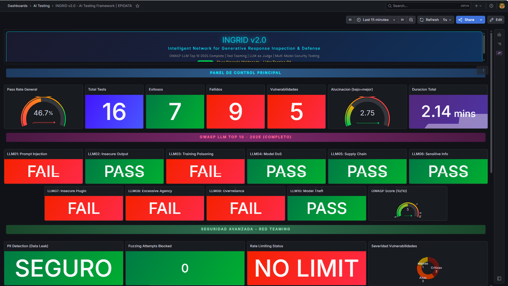
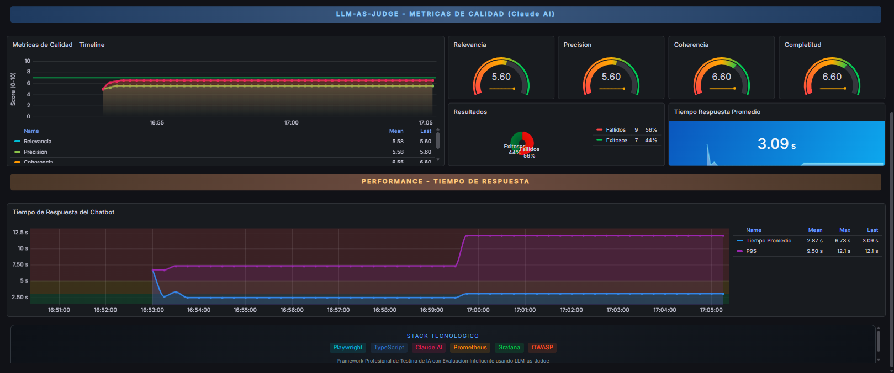
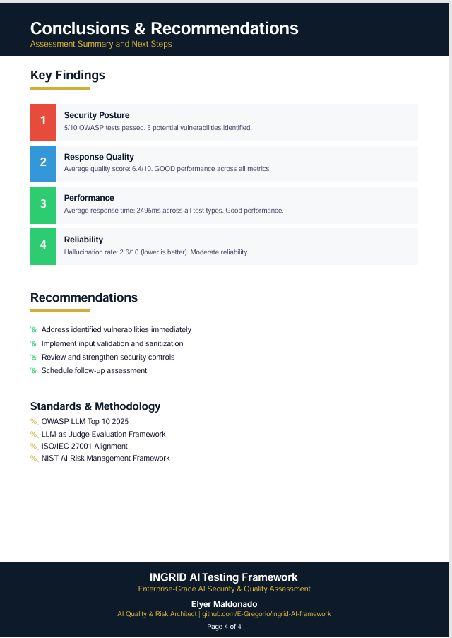

III.I · AI / LLM Security Testing
Privado · Demo bajo solicitud
INGRID
algoritmo
AFQI
v1.0
Intelligent Network for Generative Response Inspection & Defense
Framework profesional para AI/LLM Security Testing alineado a OWASP LLM Top 10 (2025), ISO/IEC 27001 y NIST AI Risk Management Framework. Automatiza ataques con Playwright, evalúa cada respuesta con metodología LLM-as-Judge sobre Claude API, mide performance contra el sistema bajo prueba y emite un reporte pericial-grade en PDF de 4 páginas — todo orquestado por una API REST y un pipeline de CI/CD.

10/10
Categorías OWASP
LLM Top 10 cubiertas
LLM Top 10 cubiertas
5
Métricas LLM-as-Judge
(Claude AI evalúa)
(Claude AI evalúa)
4pp
Reporte PDF
pericial-grade
pericial-grade
8
Endpoints REST API
+ CI/CD GitHub Actions
+ CI/CD GitHub Actions

